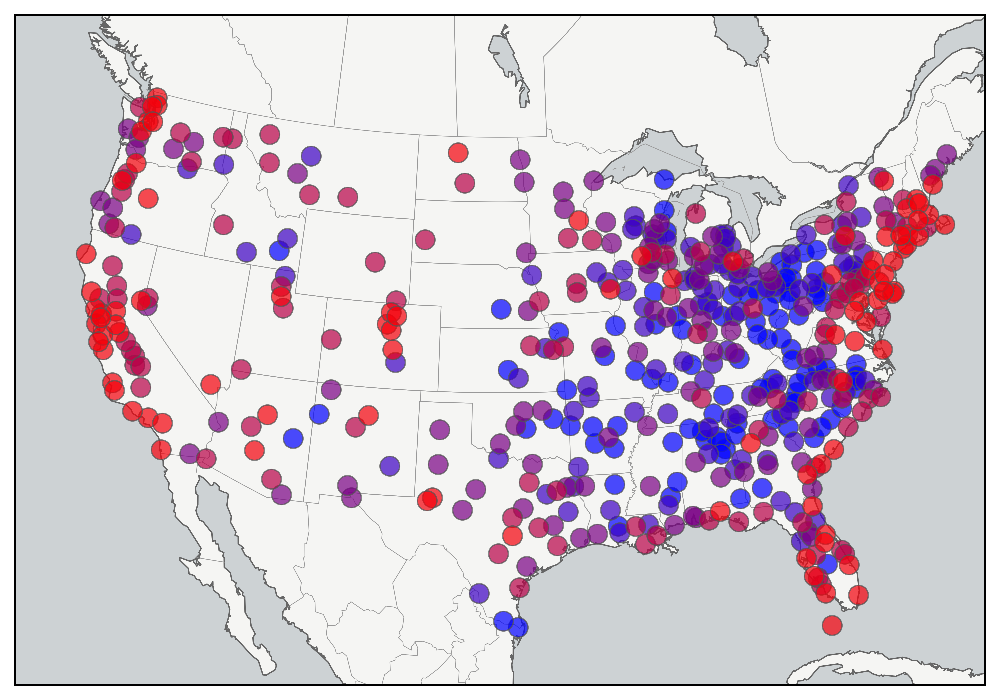
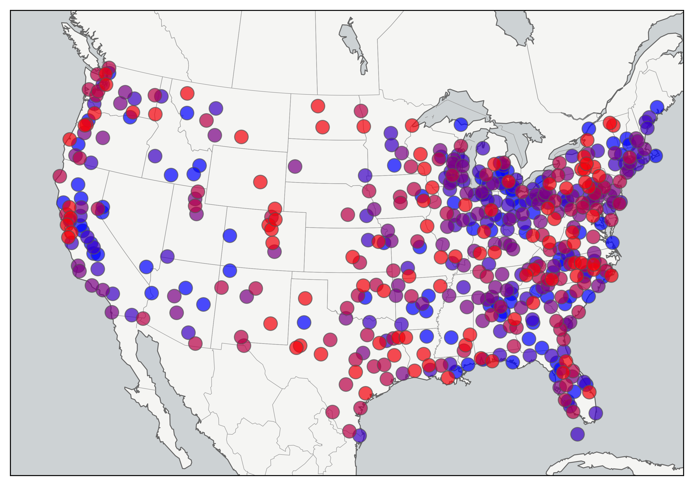
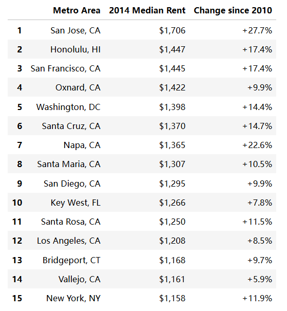
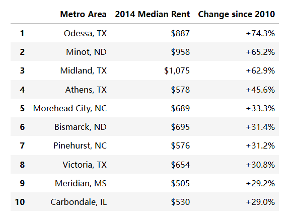
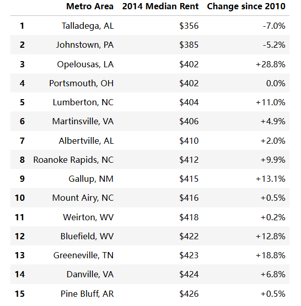
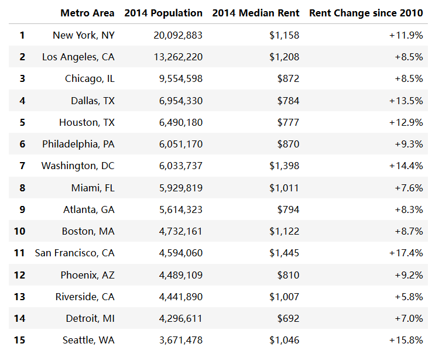
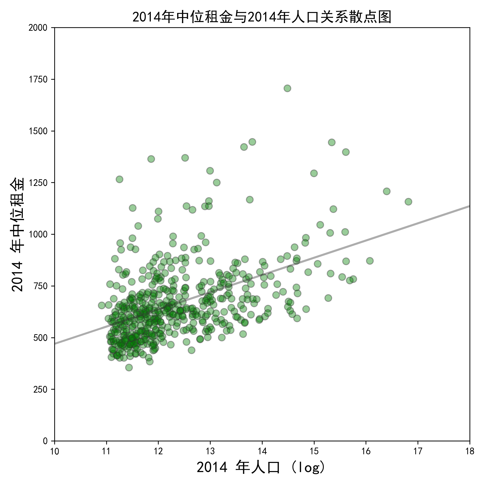

分析和可视化人口普查租金数据
美国哪些城市的房屋租金最昂贵？租金是多少？哪个城市的租金上升最快？我在GitHub上找到了美国社区调查（ACS）发布的数据，并对这些数据进行了清洗、合并、分析、绘制和可视化。我的代码和数据都在这个GitHub仓库里。
这张地图显示了全美各地的中位租金。高房价的沿海城市其租金中位数在地图上形成一道红色条带，蜿蜒分布于美国东西海岸；而美国内陆地区以蓝色标注，租金水平相对更低。

但当你切换到自2010年以来中位租金的百分比变化时，东西海岸则并不全是呈现红色，而内陆（尤其是落基山脉以东）出现了较多红色点。这表示内陆租金涨幅速度比沿海地区快

租金最昂贵的城市
以下是美国租金最高的大都市区（按主要城市分类）， 以及自2010年以来租金中位数百分比的变化：

>租金最昂贵城市名单中，加利福尼亚州占主导，在排名前15名中共有10个，自2010年以来湾区周边城市的租金涨幅也特别大，相比之下纽约作为繁华的大都市却仅排到了第15名。下面再看看自2010年以来中位租金上涨幅度的城市名单：

这份名单主要由较小的城市组成，德克萨斯州和北达科他州都经历了重大的石油繁荣和2014年的住房短缺。2010年-2014年，德克萨斯州奥德萨的中位租金上涨了74%。同样2010年-2014年，米诺特的租金上涨了65%。总体来看，2014年的中位租金为与2010年中位租金高度密切相关。这张散点图展示了2014年对比2010年各大都市区的中位租金，并附有简单的回归线体现他们的关系：

结果显示，美国大都市区的租金在这 4 年间稳定性极强，全国范围内租金整体上涨，而且高租金地区的租金涨幅普遍高于低租金地区。数据点高度集中在左下角（2010 年租金 400-800 美元区间），说明美国绝大多数大都市区的租金处于中低水平。我们会联想到人口快速增长的城市，他们的租金是否也快速增长？结果显示不全是这样，下一个散点图显示了中位租金与各大都市区人口变化百分比，增长更快的大都市往往租金涨幅稍快，但这样的关系非常薄弱。

结果显示，人口越多租金并非越高，虽然存在一定的正相关，但相关性不强。说明高租金并非只由 “城市规模大” 决定，还受其他因素（如经济活力、住房供应、地理位置、产业结构等）强烈影响。绝大多数大都市区人口规模不大，租金处于中低区间，高租金城市是少数。
租金最便宜的城市
以下是美国租金最低的大都市区（按主要城市分类）， 以及自2010年以来租金中位数百分比的变化：

租金最低的地区主要集中在小城镇，且主要集中在南部。阿拉巴马州塔拉迪加的租金是全国最低的。在这十个租金最便宜的城市中，只有两个城市出现了中位数租金的负增长。北卡罗来纳州将3个城市列入该名单但同时也将2个城市列入自2010年以来租金增长最快的城市名单。
人口最多的城市租金
以下是2014年美国人口最多大都市区，以及2014年的租金和租金变化率：

美国人口最多的15个大都市区的中位租金差异很大。圣弗朗西斯科（$1,445）和华盛顿特区（$1,398）最高，而圣路易斯（$638）和底特律（$692）是最低的而且不到最高城市租金一半。结果显示这15个大都市区中，每一个的租金上涨率都超过了5%。底特律的城市规模与中位租金之间有什么关系？人口较多的城市通常租金较高，但底特律却显得很反常，这其中可能存在许多潜在因素。
而下面这张散点图展示了2014年中位数租金与各大都市区2014年人口记录：

租金的涨跌受多重因素影响。就业岗位的增减、地方经济的繁荣与衰退，都会作用于租金水平。美联储的货币政策与通胀也会影响名义租金。城市若对开发密度进行限制，会直接约束住房供给，进而推高住房成本。从人口普查数据来看，租金中位数与都市区人口规模之间，并没有很强的相关性；2010 年以来租金涨幅与人口变化之间，也不存在明显关联。城市越大，租金未必越高；人口增长越快，租金涨幅也不一定更快。
人口普查所统计的，是受访居民当前每月实际支付的租金，它反映的是该都市区整体的住房成本水平，而非当前市场上正在招租的房源价格。统计范围包含了租金管制单元、非租金管制单元、长期租赁合同、新近租赁合同等各类住房。但需要注意的是，这一数据不能完全等同于当前市场上可租房源的真实价格。